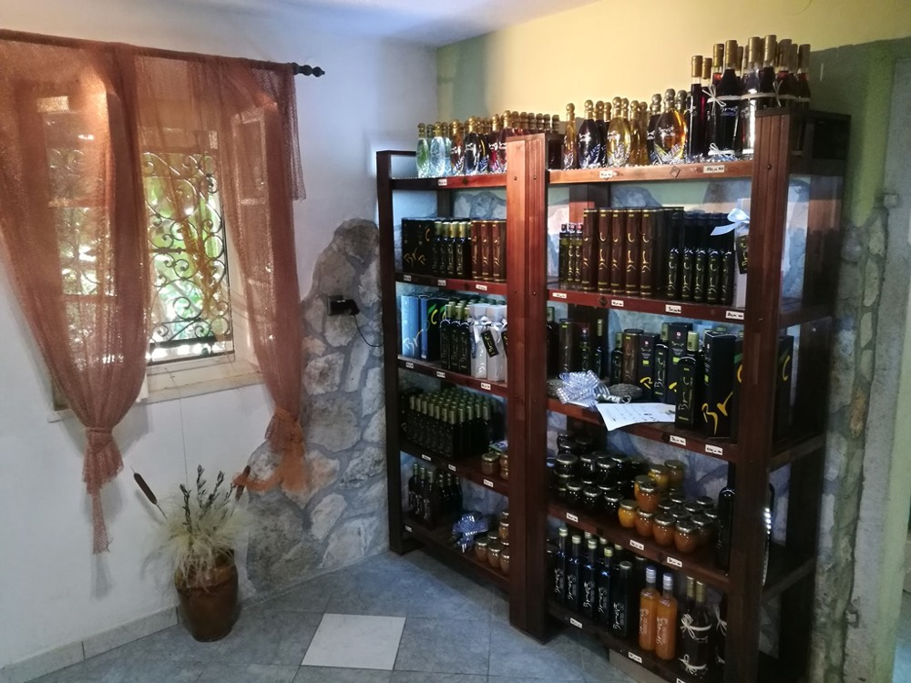
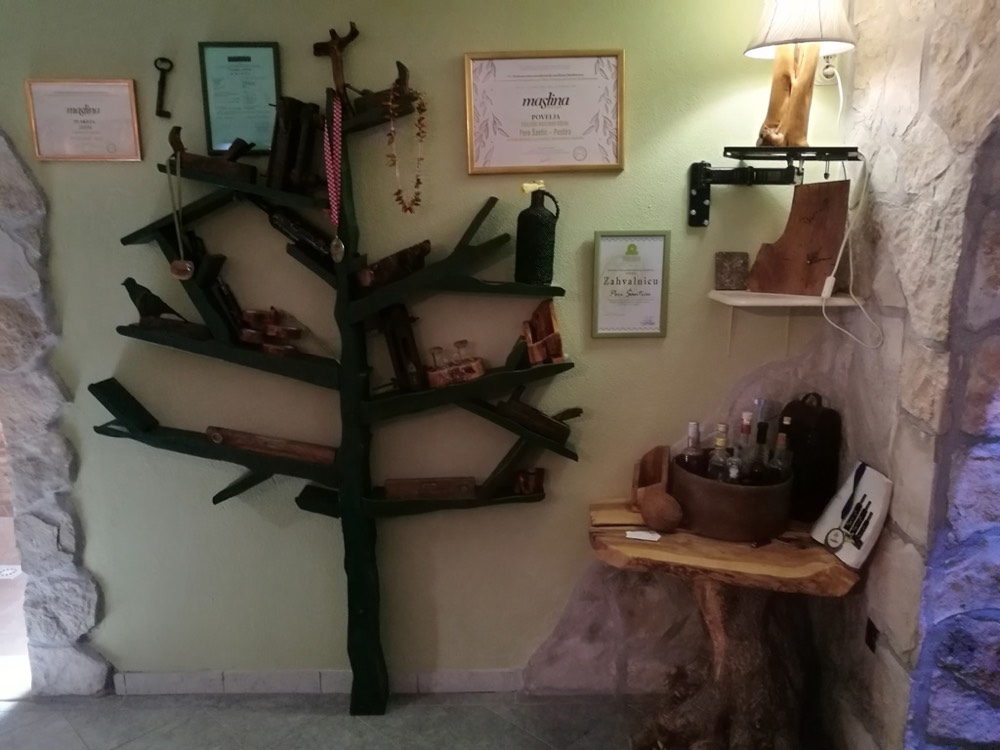
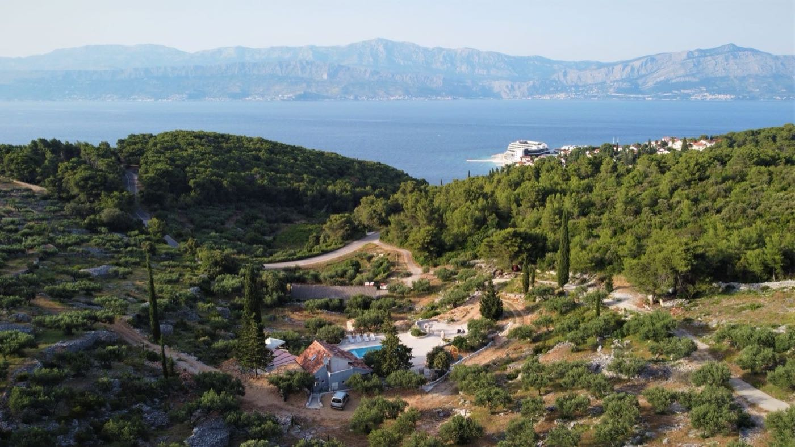
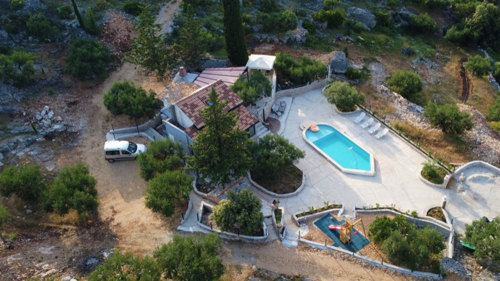
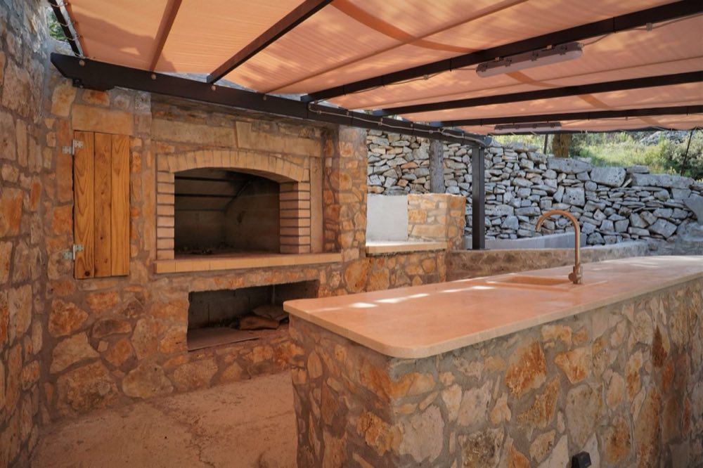

Naslovnica / Kušaonica i Villa
Od stablado boce
Dođite u Postira: probajte naše ulje u kušaonici i saznajte više o berbi i preradi – ili ostanite dulje, u Villi Broč, blizu naših maslinika.
Degustacija maslinovog ulja
U našoj kušaonici možete vidjeti i isprobati prvenstveno naše ekološko ekstra djevičansko maslinovo ulje, kao i sve druge proizvode koje sami proizvodimo – likere, marmelade i sirupe.
Kušaonica se nalazi 50 metara od glavnog raskršća na ulazu u Postira. Javite nam se unaprijed pa vas dočekamo s čašom ulja.


Villa Broč
Mirno utočište na otoku Braču – uz pogled, ugodan smještaj i mir. Villa se nalazi u Postirima, blizu naših maslinika i kušaonice.



Mir uz more i maslinike
Blizu naših maslinika i kušaonice, na sjevernoj strani Brača.
Terasa i vrt
Terasa, vrt i vanjski prostor za odmor nakon dana na otoku.
Baza za otok
Plaže, ribolov i biciklističke staze u blizini.
Izravan upit
Dostupnost termina i cijene – javite nam se izravno.
Degustacija ili boravak
Zainteresirani ste za degustaciju ili boravak u Villi Broč? Javite nam se izravno za dostupnost termina i cijene.
- Telefon+385 97 649 9402
- E-mailpero.broc@gmail.com
- AdresaGlavica 33, 21410 Postira
Otvori u Google kartama →